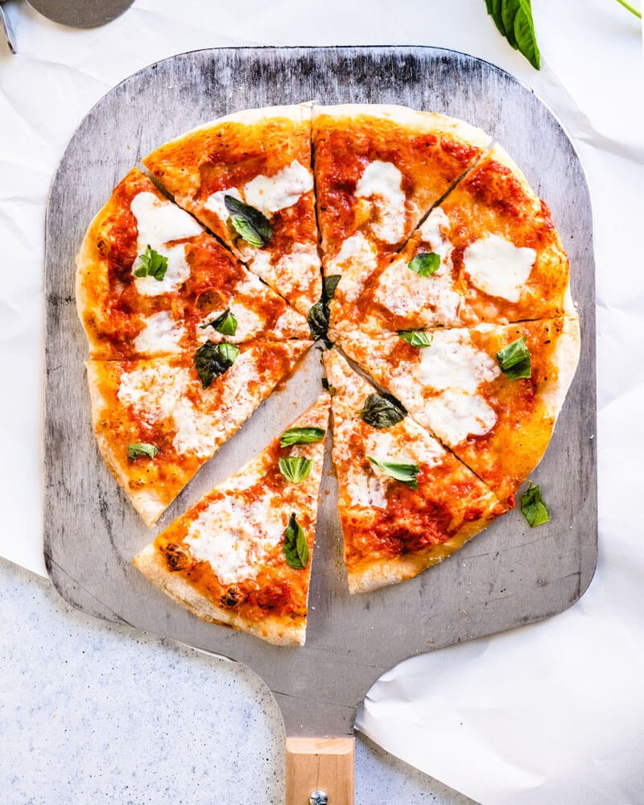

Pizza recipe

Description:
The Margherita pizza is a timeless classic that showcases the simplicity
and beauty of Italian cuisine.
With its thin, crispy crust, tangy tomato sauce, creamy mozzarella, and
fresh basil, each bite is a perfect harmony of flavors.
Ingredients:
- 1 ball of pizza dough (store-bought or homemade)
- 1 cup of tomato sauce
- 200g fresh mozzarella cheese, sliced
- Fresh basil leaves
- Extra virgin olive oil
- Salt
Steps:
-
Preheat the Oven: Preheat your oven to its highest
setting, usually around 250°C (482°F). If you have a pizza stone, place
it in the oven to heat up.
-
Prepare the Dough: On a lightly floured surface,
stretch the pizza dough into a thin, round shape. Transfer the dough to
a piece of parchment paper for easy handling.
-
Add the Sauce: Spread a thin layer of tomato sauce over
the dough, leaving a small border around the edges for the crust.
-
Add the Cheese: Arrange the slices of fresh mozzarella
evenly over the sauce.
-
Bake the Pizza: Carefully transfer the pizza (with the
parchment paper) onto the preheated pizza stone or baking sheet. Bake
for about 10-12 minutes, or until the crust is golden and the cheese is
bubbly and slightly browned.
-
Add the Basil: Remove the pizza from the oven and
immediately scatter fresh basil leaves over the top. Drizzle with a
little extra virgin olive oil and sprinkle with a pinch of salt.
-
Serve: Slice and serve your Margherita pizza hot,
enjoying the simple yet delicious combination of flavors.
Enjoy your homemade Margherita pizza!
If you have any questions or need more tips, feel free to ask.
Back to homepage